La estadística descriptiva busca sintetizar y organizar conjuntos de datos para identificar patrones y características relevantes del fenómeno estudiado. Mientras una observación individual aporta información limitada, es el análisis conjunto el que permite comprender el comportamiento global de los datos.
Este proceso se apoya en dos enfoques complementarios: el análisis exploratorio de datos, basado en tablas y gráficos para un diagnóstico inicial, y el uso de medidas descriptivas, que cuantifican propiedades clave como tendencia central y dispersión.
La organización de los datos es un paso esencial para facilitar el análisis. Los datos pueden presentarse como no agrupados o agrupados, siendo las tablas de frecuencia una herramienta fundamental, especialmente cuando el volumen de datos es grande o se trabaja con variables continuas.
Figura 1: Flowchart del analisis de datos univariados.
Tablas de frecuencia
Resumir datos para facilitar su interpretación
Las tablas de frecuencia permiten organizar un conjunto de datos asignando a cada categoría o valor el número de veces que aparece en la muestra. Son especialmente útiles en estadística descriptiva, ya que transforman datos dispersos en información interpretable.
Cuando el número de categorías es muy grande, la tabla pierde su capacidad de síntesis y deja de ser un buen resumen.
Sea \(C_1, C_2, \dots, C_k\) el conjunto de clases (categorías) observadas en la muestra.
Frecuencia absoluta\((n_i)\): número de observaciones que pertenecen a la clase \(C_i\).
\[
\sum_{i=1}^{k} n_i = n
\]
Frecuencia relativa\((f_i)\): proporción de observaciones de la clase \(C_i\) respecto del total.
La frecuencia absoluta indica cuántas veces ocurre una categoría; la frecuencia relativa permite comparar categorías en términos proporcionales.
Ejemplo. Suponga que se desea determinar la frecuencia de las facturas que llegan a una empresa como resultado de trabajos realizados por contratistas de obras menores. Los datos disponibles corresponden a las siguientes empresas:
Emis Ltda., Baker & Jones, Smith y CIA., Brown e Hijos.
Las facturas recibidas se registran a continuación:
Emis Ltda. Baker & Jones Smith y CIA. Emis Ltda.
Emis Ltda. Baker & Jones Baker & Jones Smith y CIA.
Brown e Hijos Emis Ltda. Smith y CIA. Baker & Jones
Emis Ltda. Baker & Jones Smith y CIA. Brown e Hijos
Baker & Jones Smith y CIA. Brown e Hijos Baker & Jones
Baker & Jones Emis Ltda. Baker & Jones Emis Ltda.
Smith y CIA. Emis Ltda. Baker & Jones Emis Ltda.
Brown e Hijos Emis Ltda. Emis Ltda. Emis Ltda.
A partir de estos registros se obtiene la siguiente tabla de frecuencias:
Tabla 4.1. Frecuencias de facturas entregadas por empresas contratistas
Empresa
Frecuencia absoluta
Frecuencia relativa
Baker & Jones
10
31,25 %
Brown e Hijos
4
12,50 %
Emis Ltda.
12
37,50 %
Smith y CIA.
6
18,75 %
Total
32
100 %
Código en R
# Vector con las empresas que emitieron las facturasfacturas <-c("Emis Ltda.", "Baker & Jones", "Smith y CIA.", "Emis Ltda.","Emis Ltda.", "Baker & Jones", "Baker & Jones", "Smith y CIA.","Brown e Hijos", "Emis Ltda.", "Smith y CIA.", "Baker & Jones","Emis Ltda.", "Baker & Jones", "Smith y CIA.", "Brown e Hijos","Baker & Jones", "Smith y CIA.", "Brown e Hijos", "Baker & Jones","Baker & Jones", "Emis Ltda.", "Baker & Jones", "Emis Ltda.","Smith y CIA.", "Emis Ltda.", "Baker & Jones", "Emis Ltda.","Brown e Hijos", "Emis Ltda.", "Emis Ltda.", "Emis Ltda.")# Frecuencia absolutafreq_abs <-table(facturas)# Frecuencia relativafreq_rel <-prop.table(freq_abs)# Tabla final de frecuenciastabla_frecuencias <-data.frame(Empresa =names(freq_abs),f =as.vector(freq_abs),fr =round(100*as.vector(freq_rel), 2))tabla_frecuencias
Empresa f fr
1 Baker & Jones 10 31.25
2 Brown e Hijos 4 12.50
3 Emis Ltda. 12 37.50
4 Smith y CIA. 6 18.75
Las frecuencias absoluta y relativa permiten resumir datos en cualquier escala de medición.
Cuando los datos están al menos en escala ordinal, es posible definir frecuencias acumuladas, que incorporan la noción de orden.
Frecuencia absoluta acumulada\((N_i)\): número total de observaciones que pertenecen a las clases \(C_1, C_2, \dots, C_i\).
\[
N_i = \sum_{j=1}^{i} n_j,
\qquad i = 1, 2, \dots, k
\]
En particular: \[
N_k = \sum_{j=1}^{k} n_j = n
\]
Frecuencia relativa acumulada\((F_i)\): proporción de observaciones que pertenecen a las clases \(C_1, C_2, \dots, C_i\) respecto del total de la muestra.
\[
F_i = \sum_{j=1}^{i} f_j,
\qquad i = 1, 2, \dots, k
\]
En particular: \[
F_k = \sum_{j=1}^{k} f_j = 1
\]
Las frecuencias acumuladas permiten responder preguntas del tipo
“¿cuántos (o qué proporción) de los datos no supera cierta categoría?”
Ejemplo: En un conjunto de clientes, se desea determinar la clasificación según el cumplimiento en el pago. Los clientes se clasifican en cuatro categorías: Malos (M), Regulares (R), Buenos (B) y Excelentes (E).
Los datos observados son los siguientes:
B R B E E E M B E R
R M M R R M R B B B
B B E B B B E B E R
E M B B E B B B B B
M R M B B B B E M R
A partir de estos datos se obtiene la siguiente tabla de frecuencias:
Tabla 4.2. Clasificación de clientes por su cumplimiento en el pago
Clasificación
Frecuencia absoluta
Frecuencia relativa
Frecuencia acumulada
Frecuencia relativa acumulada
Malo
8
16 %
8
16 %
Regular
9
18 %
17
34 %
Bueno
23
46 %
40
80 %
Excelente
10
20 %
50
100 %
Total
50
100 %
50
100 %
Código en R
# Vector con la clasificación de los clientesclientes <-c("B","R","B","E","E","E","M","B","E","R","R","M","M","R","R","M","R","B","B","B","B","B","E","B","B","B","E","B","E","R","E","M","B","B","E","B","B","B","B","B","M","R","M","B","B","B","B","E","M","R")# Nombres completos de las categoríasniveles <-c("M"="Malo","R"="Regular","B"="Bueno","E"="Excelente")clientes <-factor(clientes, levels =names(niveles), labels = niveles)# Frecuencias absolutasfreq_abs <-table(clientes)# Frecuencias relativasfreq_rel <-prop.table(freq_abs)# Frecuencias acumuladasfreq_abs_acum <-cumsum(freq_abs)freq_rel_acum <-cumsum(freq_rel)# Tabla finaltabla_4_2 <-data.frame(Clase =names(freq_abs),f =as.vector(freq_abs),fr =round(100*as.vector(freq_rel), 0),F =as.vector(freq_abs_acum),Fr =round(100*as.vector(freq_rel_acum), 0))tabla_4_2
Clase f fr F Fr
1 Malo 8 16 8 16
2 Regular 9 18 17 34
3 Bueno 23 46 40 80
4 Excelente 10 20 50 100
Ejemplo: En un conjunto de clientes, se desea analizar el número de veces que se han atrasado en el pago de su cuenta durante un período determinado.
Cada valor representa el número de atrasos registrados para un cliente. A partir de estos datos se obtiene la siguiente tabla de frecuencias:
Tabla 4.3. Número de veces que un cliente se ha atrasado en el pago de su cuenta
Número de atrasos
Frecuencia absoluta
Frecuencia relativa (%)
Frecuencia acumulada
Frecuencia acumulada (%)
0
32
53.4
32
53.4
1
5
8.3
37
61.7
2
4
6.7
41
68.4
3
8
13.3
49
81.7
4
5
8.3
54
90.0
5
0
0.0
54
90.0
6
0
0.0
54
90.0
7
4
6.7
58
96.7
8
2
3.3
60
100.0
En variables continuas, la organización de datos es un poco más compleja, se dividen los datos en k grupos o segmentos disjuntos, como se muestra Figura 2. Estos grupos representan las clases y se determina la frecuencia de datos asociado a cada grupo, conformando una tabla de frecuencia agrupada.
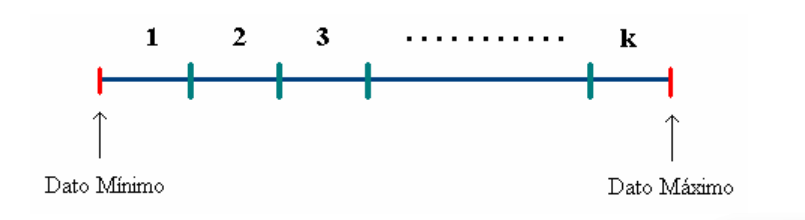
Figura 2: Segmentación en grupos de datos continuos.
En este tipo de datos las clases están compuestas por intervalos, luego es necesario buscar un representante de la frecuencia asociada a este intervalo, el cual se conoce como marca de clase. Es común utilizar como marca de clase al valor medio del segmento (intervalo).
Construcción de la Tabla de Frecuencia
En la construcción de una tabla de frecuencias, el primer paso consiste en determinar el número de clases o intervalos a utilizar. Una regla ampliamente empleada como primera aproximación es la regla de Sturges.
Regla de Sturges El número de clases se define como: \[
k = 3.3 \log(n) + 1,
\] donde \(n\) corresponde al número total de observaciones. Se recomienda utilizar un número impar de clases por razones prácticas que se explicarán más adelante.
Amplitud de clase
Para determinar la amplitud\(a\) de cada clase, se calcula previamente el rango de los datos: \[
R_D = \max{x_i} - \min{x_i}.
\]
Además, se debe identificar la unidad mínima de conteo\(u\) de los datos. Con esto, la amplitud se obtiene mediante: \[
a = \frac{R_D + u}{k}.
\]
Rango de la tabla
Una vez determinada la amplitud \(a\) (idealmente con un decimal adicional respecto de los datos originales), se define el rango de la tabla como: \[
R_T = k \cdot a.
\]
La inclusión de \(u\) en el cálculo de \(a\) no siempre garantiza que \(R_T > R_D\), por lo que puede ser necesario realizar un ajuste conveniente en el valor de la amplitud.
Límites de las clases
Para construir los límites teóricos de las clases, se comienza con el límite inferior de la primera clase: \[
LI_1 = \min{x_i} - \frac{D}{2},
\] donde \[
D = R_T - R_D.
\] Si el último dígito de \(D\) no es par, se realiza un ajuste apropiado.
El límite superior de la primera clase se obtiene sumando la amplitud: \[
LS_1 = LI_1 + a.
\]
Este límite se considera abierto para la primera clase y cerrado para la siguiente, de modo que: \[
LI_2 = LS_1.
\]
Los límites de las clases restantes se obtienen sumando sucesivamente la amplitud hasta completar las \(k\) clases.
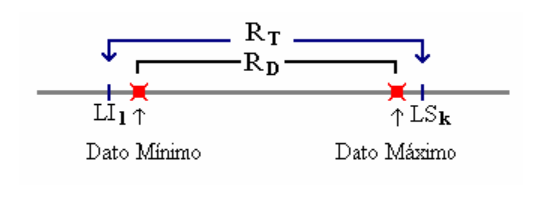
Figura 3: Límites de las clases.
Tabla 4.4. Tabla de frecuencia genérica
Clases
Frecuencia absoluta
Frecuencia relativa
Frecuencia acumulada
Frecuencia acumulada relativa
\([LI_1, LS_1)\)
\(n_1\)
\(f_1\)
\(N_1\)
\(F_1\)
\([LI_2, LS_2)\)
\(n_2\)
\(f_2\)
\(N_2\)
\(F_2\)
\([LI_3, LS_3)\)
\(n_3\)
\(f_3\)
\(N_3\)
\(F_3\)
\(\vdots\)
\(\vdots\)
\(\vdots\)
\(\vdots\)
\(\vdots\)
\([LI_k, LS_k)\)
\(n_k\)
\(f_k\)
\(N_k\)
\(F_k\)
Ejemplo: Supóngase que los datos corresponden a los tiempos de espera (en segundos) registrados en una línea telefónica de atención al cliente durante un período de observación.
A partir de estos datos se procede a construir una tabla de frecuencias agrupadas, siguiendo los pasos habituales.
Número de clases Utilizando la regla de Sturges: \[
k = 1 + 3.322 \log(n) = 1 + 3.322 \log(117) \approx 8.
\] Se adopta el número impar más cercano, por lo que se utilizan: \[
k = 7 \text{ clases}.
\]
Rango de la muestra\[
R_M = \max{x_i} - \min{x_i} = 70 - 11 = 59.
\]
Amplitud de clase Considerando una unidad mínima de conteo igual a 1: \[
a = \frac{R_M + 1}{k} = \frac{59 + 1}{7} \approx 8.6.
\]
Rango de la tabla\[
R_T = k \cdot a = 7 \cdot 8.6 \approx 60.2.
\]
La diferencia entre ambos rangos es: \[
D = R_T - R_M = 60.2 - 59 \approx 1.2.
\]
Límites de la primera clase El límite inferior de la primera clase se define como: \[
LI_1 = \min{x_i} - \frac{D}{2} = 11 - 0.6 = 10.4.
\]
El límite superior correspondiente es: \[
LS_1 = LI_1 + a = 10.4 + 8.6 = 19.0.
\]
Los límites de las clases restantes se obtienen sumando sucesivamente la amplitud.
Tabla 4.5. Tiempo de espera antes de ser atendido
Tiempos (seg.)
Marca de clase
Frecuencia absoluta
Frecuencia relativa (%)
Frecuencia acumulada
Frecuencia acumulada (%)
\([10.4, 19.0)\)
14.7
1
0.85
1
0.85
\([19.0, 27.6)\)
23.3
4
3.42
5
4.27
\([27.6, 36.2)\)
31.9
11
9.40
16
13.67
\([36.2, 44.8)\)
40.5
22
18.80
38
32.47
\([44.8, 53.4)\)
49.1
39
33.33
77
65.80
\([53.4, 62.0)\)
57.7
30
25.64
107
91.44
\([62.0, 70.6]\)
66.3
10
8.56
117
100.00
Diagramas de Tallo y Hoja
El uso de tablas de frecuencias agrupadas tiene una desventaja bastante obvia, los datos originales se pierden en el proceso de organización. La Figura 4 muestra algunas situaciones que pueden darse:
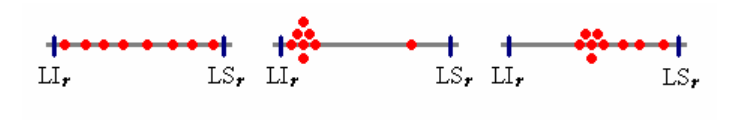
Figura 4: Representación de la distribución de los datos en rangos de intervalos.
Otra forma de presentar tablas de frecuencias agrupadas es mediante el diagrama de tallo y hoja, el cual permite mostrar los datos de manera clara sin perder la información individual ni la noción de distancia entre observaciones.
En este diagrama, el tallo corresponde a la primera parte del número y presenta menor variación, mientras que la hoja está formada por los dígitos restantes. Por ejemplo, el valor 548 puede descomponerse como tallo 5 y hoja 48, o bien como tallo 54 y hoja 8, según el nivel de detalle deseado.
El diagrama de tallo y hoja es especialmente útil cuando se trabaja con conjuntos pequeños de datos (generalmente menos de 30 observaciones), ya que en estos casos un histograma aporta poca información adicional.
5 | 48 → tallo | hoja
54 | 8 → tallo | hoja
**Ejemplo*: Los datos observados corresponden a la proporción de reclamos por pagos incorrectos en las cuentas de consumo mensual de electricidad durante los últimos dos años.
Los valores se encuentran en el intervalo comprendido entre 7.12 y 16.40. En esta aplicación se utilizan como tallos los valores enteros desde 7 hasta 16, obteniéndose el siguiente diagrama de tallo y hoja:
Diagrama de tallo y hoja
Tallo
Hojas
7
12 89
8
54 65 88
9
12 72 87 90 91 95 99
10
02 05 12 23 50
11
09 52 53
12
03 40
13
24
14
–
15
–
16
40
Otra forma de representar los datos consiste en destacar su carácter decimal, omitiendo los tallos con frecuencia nula cercanos a los extremos, lo que permite visualizar con mayor claridad la discontinuidad en la distribución:
Diagrama alternativo
Tallo
Hojas
7
12 89
8
54 65 88
9
12 72 87 90 91 95 99
10
02 05 12 23 50
11
09 52 53
12
03 40
13
24
16
40
En algunos casos, ciertas características de los datos pueden apreciarse mejor si cada tallo se divide en subtallos, dando origen al diagrama de tallo y hoja doble. En este caso, se separa cada tallo en dos partes:
a: valores con parte decimal menor a 50
b: valores con parte decimal mayor o igual a 50
El diagrama resultante es:
Diagrama de doble tallo y hoja
Tallo
Hojas
7,a
12
7,b
89
8,a
–
8,b
54 65 88
9,a
12
9,b
72 87 90 91 95 99
10,a
02 05 12 23
10,b
50
11,a
09
11,b
52 53
12,a
03 40
13,a
24
16,a
40
Una utilidad adicional de los diagramas de tallo y hoja es que permiten comparar conjuntos de datos, cuando resulta pertinente hacerlo. En este contexto, es posible contrastar los valores correspondientes a ambos años mediante un diagrama comparativo, facilitando el análisis visual de posibles diferencias en la distribución.
Gráficos
Un gráfico es otra forma de representar y resumir datos, en el gráfico se pueden se hacer evidentes ciertas características que en una tabla de frecuencias pueden pasar inadvertidas.
La representación gráfica de los datos ha logrado un uso creciente en los medios de comunicación y eso se debe en gran parte, a la popularidad y uso de software con amplias representaciones gráficas. Hay disponibilidad de gráficas de muchos tipos, desde aquellas para datos agrupados en tablas de frecuencias hasta datos no agrupados, donde su uso depende en gran medida del tipo de escala empleada. En adelante se ilustran distintos tipos de gráficos comúnmente utilizados.
Gráficos de barras y la gráfica de pastel ( circular ), son los gráficos más comunes y sencillos, usualmente utilizados en datos categóricos. Cuando los datos se presentan en escala nominal, la secuencia en que se presentan las clases es totalmente arbitraria, sin embargo, cuando los datos se presentan en escala ordinal, las clases deben mantener el orden de la escala. A continuación se presentan dos aplicaciones que exponen una serie de gráficos y variaciones de estos.
Ejemplo: La tabla siguiente muestra la proporción de clientes según su sector de ubicación.
Tabla 4.6. Sector de ubicación del cliente
Sector
1
2
3
4
5
6
Proporción (%)
10
15
40
20
10
5
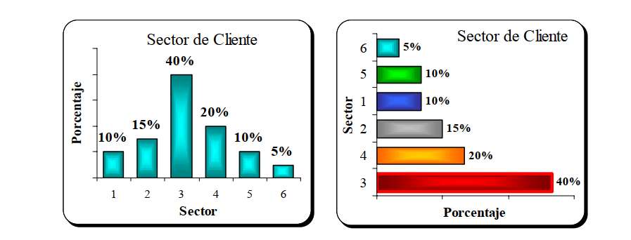
Figura 5: Gráficas de barra asociada de ubicación del cliente.
A partir de estos datos pueden construirse gráficas de barras, que permiten comparar visualmente la proporción de clientes en cada sector.
Los gráficos circulares constituyen otra alternativa para representar esta información. El gráfico circular tradicional destaca por su sencillez e interpretación directa, mientras que las versiones en tres dimensiones, aunque visualmente atractivas, pueden distorsionar la percepción relativa de los sectores.
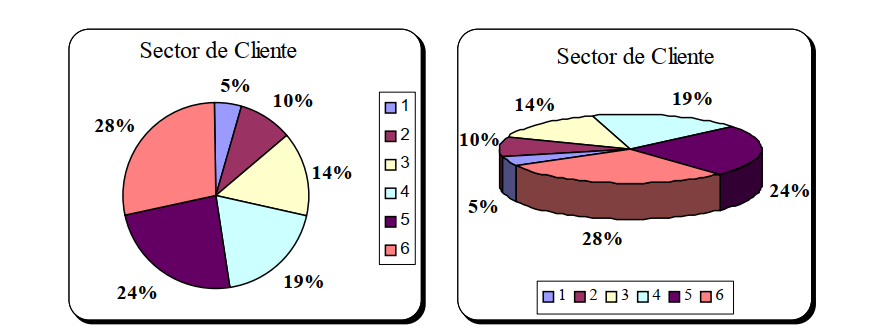
Figura 6: Gráficas circulares asociadas al sector del cliente.
Ejemplo: Supóngase ahora que se desea analizar el grado de satisfacción de los clientes respecto a los servicios adicionales prestados por la empresa. Para ello, una muestra de 77 clientes clasifica su nivel de satisfacción en las siguientes categorías: Insatisfecho (I), Indiferente (II), Normal (N), Satisfecho con reparos (SR) y Totalmente satisfecho (TS).
Tabla 4.7. Grado de satisfacción por servicios adicionales
Grado de satisfacción
Frecuencia
Frecuencia acumulada
Insatisfecho (I)
19
19
Indiferente (II)
21
40
Normal (N)
33
73
Satisfecho con reparos (SR)
2
75
Totalmente satisfecho (TS)
4
77
Dado que la variable es cualitativa ordinal, existe un orden natural en sus categorías, lo que debe respetarse en su representación gráfica.
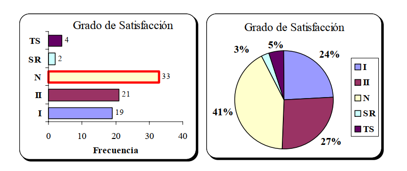
Figura 7: Gráficas circulares asociadas al sector del cliente.
En el caso de datos cuantitativos continuos, las representaciones gráficas más habituales son:
el histograma de frecuencias acompañado del polígono de frecuencias, y
la gráfica de frecuencias acumuladas junto con la ojiva.
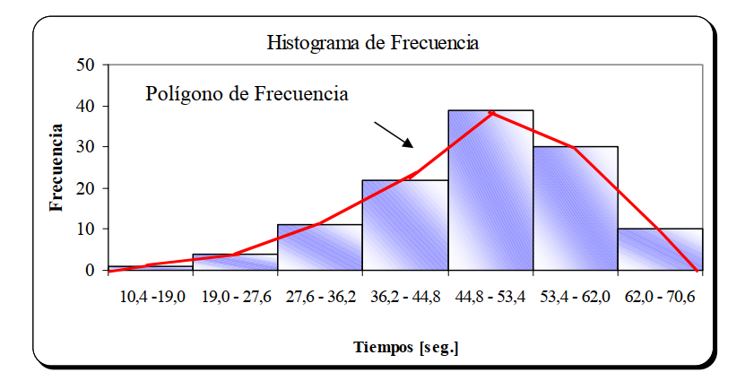
Figura 8: Histograma de frecuencia y polígono de frecuencia para los tiempos de espera.
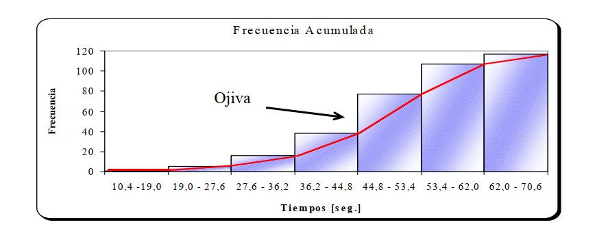
Figura 9: Gráfica de frecuencia acumulada y ojiva para los tiempos de espera antes de su atención.
La última representación gráfica es utilizada en particular cuando la variable bajo estudio se ha medido en el tiempo (datos longitudinales). Está gráfica, llamada diagrama de dispersión, es de gran utilidad en series de tiempo y control estadístico de la calidad, tiene la particularidad que puede mostrar tendencias de los datos en e tiempo. Consideremos los datos de la aplicación 4.5, pero además agreguemos el tiempo como referencia.
Tabla 4.7. Proporción de reclamos por pagos incorrectos según mes y año
Mes
Año 1
Año 2
Enero
7.12
8.65
Febrero
7.89
10.05
Marzo
10.12
10.50
Abril
8.88
9.87
Mayo
10.02
8.54
Junio
9.91
9.72
Julio
9.95
11.09
Agosto
9.90
11.52
Septiembre
10.23
12.30
Octubre
9.12
11.53
Noviembre
9.99
16.40
Diciembre
12.40
13.24
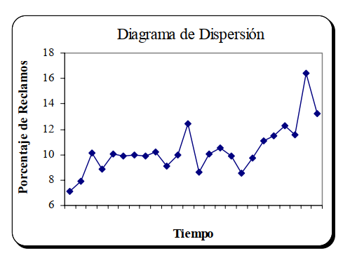
Figura 10: Diagrama de Dispersión Porcentaje de reclamos el tiempo.
Medidas de Desempeño
Los indicadores de desempeño han adquirido gran importancia a partir del establecimiento de la filosofía de gestión, calidad total y la aplicación de normas nacionales o internacionales. Son herramientas para la evaluación de la gestión, que proveen valores de referencia con el cual se puedan comparar o proponer metas.
Las medidas de desempeño son otro medio con el cual se resumen los datos, ya que a través de ellos se establece una medida resumen de alguna particularidad en los datos. Estos indicadores se dividen en tres tipos: medidas de posición, resumen de los datos que representa un lugar definido importante dentro de ellos; medidas de variabilidad o riesgo, que como se podrá apreciar son muy importantes ;y medidas de forma, que tienen una importante relación con un grupo de medidas de posición.
Medidas de Posición
Una medida de posición es un valor simple que se calcula para un grupo de datos y que se utiliza como una manera de resumir a estos un valor dentro del rango de los datos. Normalmente se desea que el valor sea representativo de todos los valores incluidos en el grupo, estos valores pueden estar relacionados con posiciones de particular interés como los extremos, los cuales se asocian a cuantiles , o valores del centro, llamados de tendencia central.
La Media Aritmética : La media aritmética, o promedio, se define como el cociente de la suma de todos los valores entre el número total de valores. En estadística, un “promedio**” es una medida de Tendencia central** para un conjunto de datos.
En estadística es normal representar una medida descriptiva de una población, (o parámetro poblacional), mediante letras griegas, en tanto que se utilizan letras romanas para las medidas descriptivas de estadísticas muestrales. Así, la media aritmética para una población de valores se presenta mediante el símbolo μ, en tanto
que la media aritmética de una muestra se representa mediante el símbolo X. Las expresiones para el cálculo de la media de una población y de una muestra son:
Cuando se agrupan datos en una distribución de frecuencias, se utiliza el punto medio de cada clase como aproximación de todos los valores contenidos en ella. El punto medio o marca de clase se representa con el símbolo \(m_i\) , en donde el subíndice \(i\) indica la “clase \(i\)”, y se utiliza la letra \(n_i\) para representar la frecuencia absoluta observada en la clase respectiva.
Las fórmulas para la media de la población y de la muestra para datos agrupados son:
La gran desventaja de este indicador es su gran sensibilidad a la presencia de datos extremos. Un dato extremo se manifiesta inmediatamente en el promedio, poniendo en duda el ser un valor representativo del centro de los datos.
La Mediana: La mediana de un conjunto de datos es el valor que ocupa el lugar central de estos cuando se ordenan en orden de magnitud. Para conjunto de datos, con un número par de elementos, la mediana se calcula como el promedio de los valores centrales.
En el caso de estar trabajando con datos dispersos, la expresión para determinar la posición de la mediana en el conjunto (ordenado) es:
\[
\mathrm{Me} =
\begin{cases}
X_{\left(\frac{n+1}{2}\right)}, & \text{si } n \text{ es impar}, \\[6pt]
\dfrac{1}{2}\left(X_{\left(\frac{n}{2}\right)} + X_{\left(\frac{n}{2}+1\right)}\right),
& \text{si } n \text{ es par}.
\end{cases}
\]
En las expresiones anteriores, \(X\), representa el valor de dato, mientras que el paréntesis en el subíndice, muestra el lugar que ocupa la mediana dentro del conjunto de datos ordenados.
Ejemplo : Considerando los pagos de consumo, en una muestra de 15 cuentas en un restaurante:
Para datos agrupados, en primer lugar es necesario determinar la clase que contiene el valor de la mediana, para después determinar la posición de la mediana dentro de la clase mediante interpolación. La clase que contiene la mediana es la primera clase cuya frecuencia acumulada es mayor o igual a la mitad de los datos. Una vez que se identifica esta clase, se determina el valor interpolado de la mediana , empleando la siguiente expresión:
La mediana es otra medida de tendencia central, este indicador no es afectado por datos extremos (indicador robusto).
La Moda : Medida de tendencia central, que está dada por el valor o clase que se presenta con mayor frecuencia. A una distribución que tiene una sola moda se le denomina unimodal.
Cuando dos valores no adyacentes tienen frecuencias máximas similares, se dice que la distribución es bimodal.
Para datos agrupados, primero se identifica la clase que contiene la moda, determinando la clase que tiene el mayor número de observaciones (clase modal). Algunos autores consideran que la moda es el punto medio de la clase modal (marca de clase), otros, interpolan dentro de la clase modal, de acuerdo con la siguiente expresión:
\[
\mathrm{Mo}
= L_i
+ \left(\frac{d_1}{d_1 + d_2}\right)a_i,
\qquad
\text{donde }
\frac{d_1}{d_1 + d_2}
\text{ es un factor de ponderación.}
\]
\(L_i\) = Límite inferior de la clase que contiene la moda.
\(d_1\) = Diferencia entre la frecuencia de la clase modal y la frecuencia de la clase que le precede.
\(d_2\) = Diferencia entre la frecuencia de la clase modal y la frecuencia de la clase que le sigue. \(a_i\) = Amplitud del intervalo de clase.
La deducción de la expresión es clara con la ayuda de la Figura 11. Como se puede apreciar en esta figura \(d_2\) es menor que \(d_1\) , por esta razón el factor de ponderación es mayor que 0.5, que multiplicado por la amplitud permite que la moda se encuentre más cerca del limite superior de la clase modal.
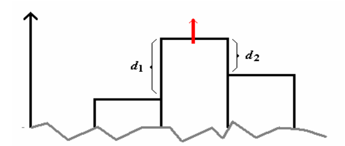
Figura 11: Esquema de localización de la moda.
En caso que \(d_2\) sea mayor que \(d_1\) , el factor de ponderación es menor que 0.5, que multiplicado a la amplitud permite que la moda se encuentre más cerca del limite inferior. Cuando \(d_2\) es igual a \(d_1\) , el factor de ponderación es 0.5, que multiplicado a la amplitud permite que la moda se encuentre justo en la marca de clase modal.
En tablas de frecuencia es posible encontrar dos o más clases con igual máxima frecuencia, en este caso se dice que la población es: bimodal , trimodal , etc.
Ejemplo : Para los datos agrupados de la Tabla 4.5, la moda de los tiempos de espera (en segundos) es:
Existen otras medidas de tendencia central, utilizadas en situaciones más específicas como una solución al problema de la alta sensibilidad del promedio aritmético, alguna de ellas son:
Media Geométrica : Se utiliza principalmente para promediar proporciones de variaciones, en datos económicos y se define como la raíz n-ésima del producto de los n valores.
\[
M_G = \sqrt[n]{x_1 \cdot x_2 \cdots x_n}
\]
Media Armónica : Se define como el recíproco de la media de los recíprocos de las medias, es decir:
Media Recortada : Se define como el valor medio excluyendo un porcentaje de datos en el extremo inferior y superior del conjunto de observaciones. Existen medias recortadas al 90%, 80%, etc. Por ejemplo, en la media recortada al 90%, no se consideran en el cálculo de la media el 5% de los datos más pequeños y el 5% de los datos más grandes.
Cuantiles : Los cuantiles son medidas de posición que dividen los datos en grupos bajo los cuales se encuentra una determinada proporción de éstos, por lo se requiere que los datos se encuentren en al menos escala
La mediana es un cuantil que divide la distribución de los datos en dos partes de igual frecuencia acumulada, y luego bajo/sobre la mediana se encuentra acumulado el 50% de los datos. Los cuartiles , la dividen en cuatro cuartos; los quintiles , dividen la población en cinco; los deciles , la dividen en diez décimos; y los puntos percentiles , la dividen en cien partes. Estos, en el caso de datos dispersos, son expresados por:
Estas expresiones son exactas en la medida que los factores de proporción: \(\frac{i(n+1)}{4},\;
\frac{i(n+1)}{10},\;
\frac{i(n+1)}{100}\) sean números enteros, en caso contrario una buena aproximación (aunque no la única) la entrega el promedio entre el entero superior e inferior de la respectiva fracción, tal como se presenta en la aplicación siguiente.
Luego, el 75% de los pagos por consumo son menores o iguales a $ 24.500.
Algunos casos en que el factor de proporción no resulta un número entero, como por ejemplo, el decil 4 ó el percentil 68. En el primero, el valor se encuentra entre los valores sexto y séptimo del grupo ordenado, cuya interpretación sería que el 40% de los importes de consumo de las 15 cuentas del restaurante son menores o iguales a $ 3.750.
Para datos agrupados, la fórmula se modifica de acuerdo con el punto fraccionario de interés. Para utilizar esta expresión modificada, en primer lugar se determina la clase que contiene el punto de interés, de acuerdo con las frecuencias acumuladas, y después se lleva a cabo una interpolación como en el caso anterior de la mediana. Ahora un análisis más exhaustivo de estas expresiones se obtiene a través del segmento de la línea recta en la ojiva, recordemos la Figura 4 de los tiempos de espera, donde a partir de 117 datos, se construye la gráfica, de la Figura 4.10 y supongamos que estamos interesados en el percentil 78, por lo tanto debemos determinar, de acuerdo con las frecuencias acumuladas la clase que contiene el punto de interés , como se muestra en la Figura 12, este punto se encuentra en la penúltima clase.
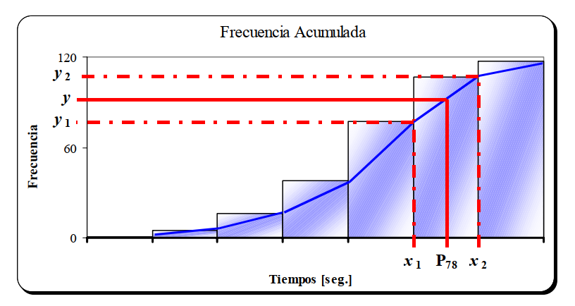
Figura 12: Gráfica para la determinación de percentiles.
Si se recuerda la ecuación de la línea de la recta, dada por:
Luego, el 80% de los tiempos de espera es menor o igual a los 58,2 segundos.
Otra utilidad, de la expresión anterior, permite determinar que porcentaje de los datos se encuentra bajo (o por defecto sobre) un determinado valor, como por ejemplo, ¿Qué porcentaje de las veces, los tiempos de espera fueron superiores a 47 segundos?. En este caso se conoce el percentil, pero no el porcentaje, luego:
Por lo tanto, el (100 – 40,01)%= 58,99%. son superiores a 47 segundos.
También se puede determinar el porcentaje de tiempos de servicio que se encuentra en el intervalo [47; 63] segundos. Como se sabe el porcentaje que se encuentra bajo los 47 segundos (40,01%),y determinando el % que están bajo los 63 segundos.
Obteniéndose que el porcentaje de tiempos de servicio en el intervalo deseado es de (92,45 – 40,01)% = 51,44%.
Medidas de Variabilidad
Las medidas de tendencia central ó de posición que se presentaron son útiles para identificar un valor “típico” ó “particular” de un conjunto de datos, las medidas de variabilidad se ocupan de describir la dispersión (riesgo, precisión) de los datos con respecto a una medida del centro o un valor particular.
A modo de ejemplo, suponga que dos máquinas empacadoras dan como resultado productos con un peso promedio de 10 gramos, pero que en un caso los productos se encuentran dentro de un rango de 0,1 gramos con respecto a este peso promedio, en tanto que en el otro los pesos pueden variar hasta en un gramo. Como se observa en la Figura 13, en el primer caso los datos son menos dispersos respecto al valor de 10 gramos que en el segundo caso, lo que implicaría que suposiciones realizadas al primer caso serían de menor riesgo que las del segundo.
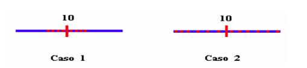
Figura 13: Visualización de la variabilidad en un conjunto de datos.
Existen varios indicadores para medir la magnitud de la variabilidad en conjuntos de datos. Las que se describen a continuación son: rango , rango modificado,desviación media , varianza, desviación estándar y coeficiente de variación.
El rango: El rango \((R)\) es la diferencia entre el mayor y el menor valor del conjunto de datos. Si \(\max{x_i}\) representa el valor máximo y \(\min{x_i}\) el valor mínimo, entonces:
\[
R =
\begin{cases}
\max\{x_i\} - \min\{x_i\}, & \text{datos no agrupados},\\[6pt]
LS_k - LI_1, & \text{datos agrupados}.
\end{cases}
\]
Ejemplo: Considerando los pagos de consumo en una muestra de 15 cuentas en un restaurante:
Rangos Modificados: Un rango modificado es un rango para el cual se elimina cierto porcentaje de los valores en cada uno de los extremos de la distribución y se simboliza por \(R_{\text{mod}}) ((j%) \text{ central})\). Algunos rangos modificados típicos son el 50% central, el 80% central y el 90% central.
Para determinar el rango modificado, primero se deben ubicar los dos percentiles de interés y, posteriormente, calcular el rango entre ellos. Por ejemplo, para el rango del 80% central, los percentiles de interés son el décimo percentil y el nonagésimo percentil, ya que el 80% central de los valores se encuentra entre estos dos puntos.
Ejemplo: Considerando los pagos de consumo en una muestra de 15 cuentas en un restaurante:
El rango modificado al 50% central también es conocido como rango intercuartílico, mientras que el rango modificado al 80% es conocido como rango interdecílico. Los rangos modificados, en general, buscan anular el efecto de valores extremos de los datos, que producirían un fuerte efecto en el rango tradicional, como medida de variabilidad.
Ejemplo Para los datos agrupados de la Tabla 4.5, el rango modificado al 90% central de los tiempos de espera (en segundos) es:
La Desviacion Media : La desviación media (DM) es la media (promedio) del valor absoluto de la diferencia entre cada uno de los datos y el promedio del grupo.
Nota : Algunos autores utilizan la diferencia entre cada valor y la mediana.
Es común también utilizar indicadores como la desviación mediana (DMe) o la desviación modal (DMo), como indicadores de variabilidad alternativos a la desviación media. La utilización de estos indicadores, es debido a la alta sensibilidad del promedio a valores extremos, que también se hereda en indicadores que utilizan este indicador, como es el caso de la desviación media. También debe notarse, que la desviación modal, sólo es posible cuando la moda se determina a partir de datos cuantitativos, ya que es una medida de dispersión que no tiene sentido en datos cualitativos donde no existe la noción de distancia.
Ejemplo : Considere que las ventas (por vendedor) de aparatos eléctricos fueron las siguientes: \(5 – 8 – 8 11 – 11 – 11 – 14 – 16\). La media aritmética es 10,5. y la desviación media es:
Así, puede decirse que, en promedio, las ventas de aparatos eléctricos por vendedor difieren en 2,6 unidades de la media del grupo,
Ejemplo : Para los datos agrupados de la Tabla 4.5, para los tiempos de espera, la media aritmética es 48,4 segundos, la desviación media está dada por:
La Varianza y la Desviación Estándar : La varianza es similar a la desviación media porque se basa en la diferencia entre cada uno de los valores del conjunto de datos y la media del grupo, La diferencia consiste en que, antes de sumarlas, se eleva al cuadrado cada una de las diferencias, Para una población, se representa la varianza mediante \(V(X)\) o, típicamente por la letra \(\sigma^2\) ; la fórmula de cálculo es:
A diferencia de otras estadísticas muestrales que se han analizado, la varianza de una muestra no es, en términos de cálculo, completamente equivalente a la varianza de la población, La varianza muestral se representa mediante \(S^2\) , y está dada por:
Se utiliza con mayor frecuencia la raíz cuadrada de la varianza, representada mediante la letra griega σ para el caso poblacional y \(S\) para una muestra, y se le denominada desviación estándar, Las fórmulas son:
\[
\sigma = \sqrt{V(X)}
\]
Estas medidas (muestrales) también tienen su representación en datos agrupados, la cual está dada por:
\[
S = \sqrt{\text{Varianza muestral}}
\]
La desviación estándar , además de ser una medida de dispersión que utiliza toda la información (en contraposición con los rangos) y ser expresada en igual unidad de medida que los datos originales, es especialmente útil cuando se le utiliza junto con la denominada distribución normal.
Ejemplo : Para los datos de ventas de aparatos eléctricos: \(5 – 8 – 8
11 – 11 – 11 – 14 – 16\). , la media aritmética es 10,5 unidades. Considerando estos datos mensuales de ventas como la población estadística de interés, se determina la desviación estándar:
Ejemplo : Para los datos agrupados de la Tabla 4.5 (tiempos de espera), la media aritmética es 48,4 segundos, la desviación estándar es:
\(f_i\)
\(m_i\)
\(m_i - \bar{x}\)
\((m_i - \bar{x})^2\)
\(f_i (m_i - \bar{x})^2\)
0,009
14,7
-33,7
1135,7
10,2212
0,034
23,3
-25,1
630,0
21,4203
0,094
31,9
-16,5
272,3
25,5915
0,188
40,5
-7,9
62,4
11,7331
0,333
49,1
0,7
0,5
0,1632
0,256
57,7
9,3
86,5
22,1414
0,086
66,3
17,9
320,4
27,5533
Total
118,826
\[
\Rightarrow S = \sqrt{V(X)} = \sqrt{118{,}826} \approx 10{,}9
\]
Medidas de Forma
Los indicadores de forma de las distribuciones de frecuencias asociadas a un conjunto de datos, son medidas que se agrupan en : asimetría y curtosis.
Las medidas de asimetría centran su interés en la tendencia de los datos a concentrarse en los valores más pequeños, que se conoce como asimetría positiva; valores más grandes, que conoce como asimetría negativa; o simplemente en el centro, que se denomina como simétrica.
En la Figura 14, se observan las posibilidades de asimetría, en conjuntos de datos que presentan sólo una cima. En estos casos observar tendencia de los datos resulta fácil, sin embargo cuando se presenta más de una cima en una gráfica (no necesariamente más de una moda), determinar la asimetría de los datos es más riesgoso, con lo cual se recomienda el uso de indicadores para una mayor certeza de la situación. La figura muestra además, el caso de datos simétricos de un conjunto de datos bimodales.
Las medidas de curtosis centran su atención en la tendencia de los datos en el grado de concentración que estos poseen alrededor de puntos centrales, en este caso se dice que los datos tienen una concentración mesocúrtica cuando el grado de concentración se acerca a ‘ lo ideal ’, mientras que, se habla de letocúrtica o platicúrtica , si el grado de concentración es menor o mayor a lo ideal,respectivamente.
El concepto de ideal asociado a esta medida, tiene su fundamento en la comparación de la curtosis muestral (mediante el uso de indicadores), con el de un modelo de probabilidad muy importante en estadística clásica que posee un valor teórico fijo con el cual es comparado.
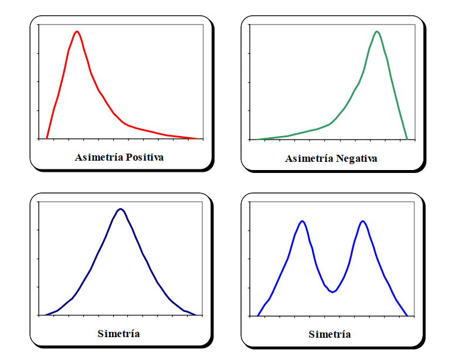
Figura 14: Representación de simetría en conjunto de datos.
En la Figura 14, se muestran las tres situaciones de curtosis, en conjuntos de datos que presentan tan sólo una cima. Se puede apreciar, que en el caso de distribuciones leptocúrticas, la menor variabilidad es evidente en comparación a las otras formas. La distribución mesocúrtica, representa el caso de una distribución con variabilidad ideal , en comparación con el modelo probabilístico Normal. Finalmente la distribución platicúrtica, representa la mayor variabilidad en comparación con la distribución ideal.
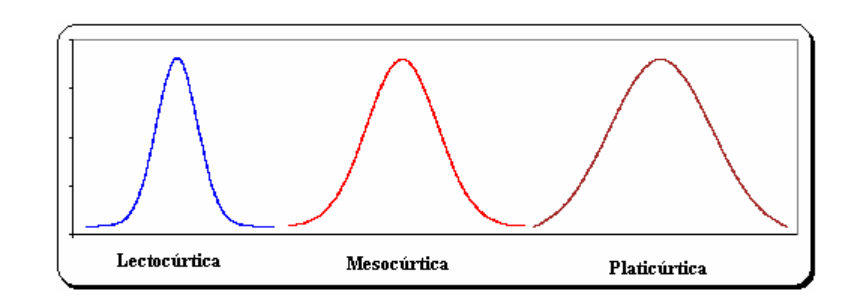
Figura 15: Representaciones de curtosis en conjunto de datos.
Sin embargo, mediante un análisis gráfico es muy difícil poder visualizar que un conjunto de datos posee alguno de estos patrones.,
Los indicadores asociados a curtosis, ayudan a la comparación de la variabilidad en los datos, pues justamente la variabilidad mide el grado de no concentración de estos. Adicionalmente, se pueden emplear como un criterio para determinar la existencia de datos extremos, es decir, muy grandes ó muy pequeños, con respecto al común de los datos observados, que causarían un efecto devastador en algunos indicadores, ó bien, como una señal de la existencia de dos estratos dentro de los datos que se analizan, como en el caso de la Figura 15, donde se muestra un conjunto de datos bimodales, donde perfectamente, se podría suponer que en la característica de la población en estudio se presenta concentrada en dos grupos, que afectarían los resultados de algunos indicadores.
A continuación se presentan una serie de indicadores asociados a características de forma, en el primer caso se muestran indicadores de asimetría dados por los coeficientes de: Yule, Simetría, Pearson y Fisher; para finalizar con les coeficientes de curtosis: \(K_2\) y Fisher.
Coeficiente de Yule y Simetría : Estos son dos indicadores de simetría, que se basan en cuantiles centrales, como lo son: cuartil 1, cuartil 3 y la mediana. Las expresiones de cálculo de Yule y Simetría son:
\[
I_Y = \frac{Q_3 + Q_1 - 2Q_2}{2Q_2}
\]
\[
I_S = \frac{Q_3 + Q_1 - 2Q_2}{Q_3 - Q_1}
\]
Estos indicadores (adimensionales) son de fácil cálculo, tanto para datos dispersos como agrupados, tienen la ventaja de no ser afectados por observaciones aberrantes, que siempre se encuentran sobre \(Q_3\) o bajo \(Q_1\) , razón por la cuál se puede
apreciar que ambos indicadores muestran la simetría en el centro de los datos y no en la totalidad de éstos.
Coeficiente de Pearson : El coeficiente de Pearson, se basa en tres indicadores de usual uso en estadística y mide la asimetría, como la diferencia entre la media y la mediana con respecto a la desviación estándar. Este coeficiente poblacional y muestral se encuentran dados respectivamente por:
\[
A_S = \frac{3(\bar{x} - M_e)}{S_x}
\]
\[
A_S = \frac{3(\mu - M_e)}{\sigma}
\]
El promedio y la mediana, que son dos medidas de tendencia central, que cuando hay simetría siempre son iguales, y la desviación estándar, que es una medida de riesgo que estandariza el indicador, hacen de éste, un indicador más completo.
Coeficiente de Simetría de Fisher : Es el indicador de simetría más fiable de los presentados anteriormente, se basa en el tercer momento de la distribución de los datos, y que para datos dispersos y agrupados se obtiene mediante:
Estas medidas se ven fuertemente afectadas por las unidades de medida de los datos en estudio, por lo tanto se estandariza para medir la asimetría estandarizada, cuya expresión queda:
\[
\alpha_3 = \frac{m_3}{S_x^3}
\]
En su cálculo poblacional, al igual que en el coeficiente de Pearson, basta con el reemplazo de los indicadores muestrales: \(\overline{x}\) y \(s\) , por sus respectivos cálculos poblaciones \(\mu\) y \(\sigma\).
El punto de comparación teórico de estos indicadores es el cero , pues en distribuciones simétricas todos los indicadores resultan ser cero, mientras que si el indicador en negativo o positivo, se dice que la asimetría es negativa o positiva, respectivamente. Sin embargo, en la práctica en el análisis de datos reales, nunca se obtienen coeficientes ‘cero’, por lo cual es bueno recomendar un intervalo en torno al cual se aceptará la simetría.
Para una distribución simétrica el valor del coeficiente de asimetría es cero, porque el promedio y la mediana son iguales, mientras que para una distribución con asimetría positiva la media es siempre mayor que la mediana y, por ello el valor del coeficiente es positivo, como se muestra en la Figura 15, donde además se muestra el caso de que en una distribución con un coeficiente de asimetría negativa, la media es siempre menor que la mediana.
Figura 15: distribución de las medidas de tendencia central en curvas unimodales.
Ejemplo : Para los datos de ventas de aparatos eléctricos: \(5 – 8 – 8 – 11 – 11
11 – 14 – 16\). La media aritmética, la mediana, el primer y tercer cuartil, además de la desviación estándar están dadas por: 10.5; 11.0; 8.0; 12.5 y 3.3 unidades, respectivamente.
Considerando que estos datos mensuales de ventas son la población estadística de interés, se tiene que:
Coeficiente\(K_2\) : Este indicador de curtosis, que se basan en cuantiles extremos, como lo son: decil 1 y decil 9. Las expresiones de cálculo están dadas por:
Estos indicador de fácil cálculo, tanto para datos dispersos como agrupados, tienen la ventaja de no ser afectados por observaciones aberrantes, que en la mayor parte de los casos se siempre se encuentran sobre el \(D_ 9\) o bajo el \(D_ 1\). \(K_2\) , se encuentra
divido por el factor 1,9 veces el rango intercuartílico que es la distancia que existe teóricamente entre los deciles 9 y 1, en la curva ideal estandarizada.
Coeficiente de Curtosis de Fisher : Es el indicador de curtosis más, que se base en el cuarto momento de la distribución de los datos, que se encuentra dado para datos dispersos y agrupados por:
Al igual que en el caso de m 3 , esta medida se ven fuertemente influenciadas por las unidades de medida de los datos en estudio, por lo tanto, esta medida de desempeño para medir la curtosis se estandariza, cuya expresión queda de la siguiente manera: \[
\alpha_4 = \frac{m_4}{S_x^{\,4}} - 3
\]
En su cálculo poblacional, basta con el reemplazo de los indicadores muestrales: \(\overline{x}\) y \(s\) , por sus respectivos cálculos poblaciones \(\mu\) y \(\sigma\).
El punto de comparación teórico de estos indicadores es el cero, pues en distribuciones absolutamente mesocurticas todos los indicadores resultan ser cero, mientras que si el indicador en negativo o positivo, se dice que la curtosis es platicurtica o leptocurtica, respectivamente.
Sin embargo, en análisis de datos continuos en la práctica, nunca se obtienen coeficientes ‘cero’, por lo cual es bueno recomendar un intervalo en torno al cual se acepta la distribución de los datos como mesocurtica.
Ejemplo : Para los datos de ventas de aparatos eléctricos que fueron: \(5 – 8
8 – 11 – 11 – 11 – 14 – 16\). Donde el primer y noveno decil, junto con el primer y tercer cuartil están dados por: 5; 16; 8 y 12.5 unidades, respectivamente.
Considerando que estos datos mensuales de ventas son la población estadística de interés, se determina los coeficientes de curtosis:
Luego, si consideramos \(K_2\) , la distribución tiene un agudamiento que se podría considerar mesocúrtico, sin embargo si usamos \(m_4\) muestra una clara tendencia platicúrtica. Esto se debe que \(K_2\) , a perdido información al resumir los datos, por esta razón el \(m_4\) un coeficiente más confiable en establecer el tipo de curtosis de los datos.
Ejemplo : Para los datos agrupados de la Tabla 4.5, para los tiempos de espera, donde la media aritmética es 48,4 segundos, la desviación estándar está dada por:
\(f_i\)
\(m_i\)
\(m_i - \bar{x}\)
\((m_i - \bar{x})^4\)
\(f_i (m_i - \bar{x})^4\)
0,009
14,7
-33,7
1289791,78
11608,13
0,034
23,3
-25,1
396912,60
13495,03
0,094
31,9
-16,5
74120,06
6967,29
0,188
40,5
-7,9
3895,01
732,26
0,333
49,1
0,7
0,24
0,08
0,256
57,7
9,3
7480,52
1915,01
0,086
66,3
17,9
102662,57
8828,98
Total
43546,78
Utilizando las medidas calculadas anteriormente como: